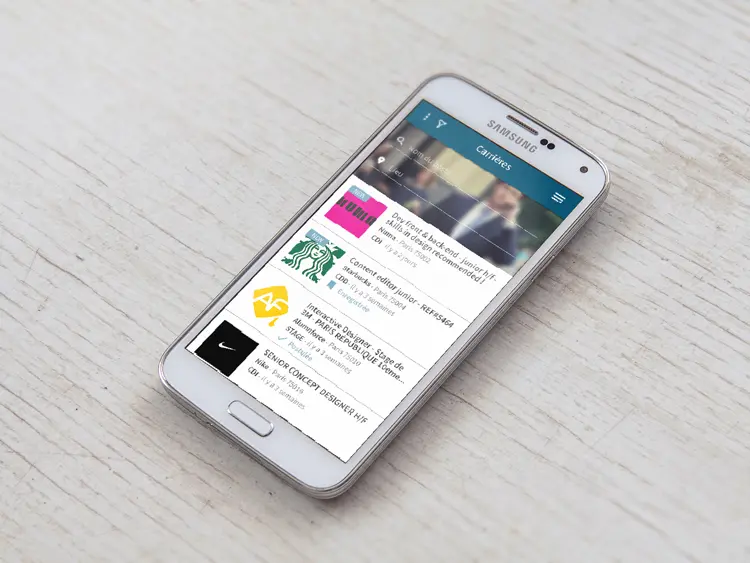
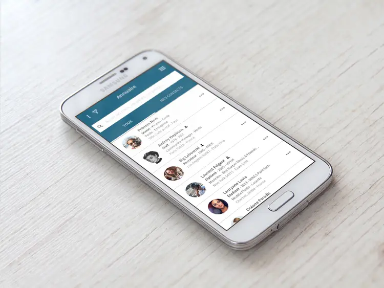
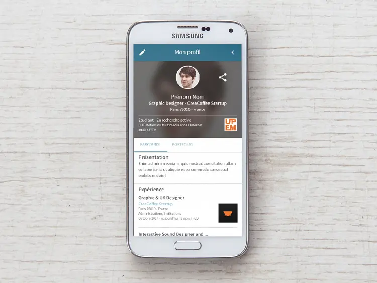

Alumnforce
Une nouvelle Expérience Utilisateur (UX) et Interface Utilisateur (UI)
Alumnforce est une application web et mobile, créée par Mevia. Cette solution 2.0 est dédiée aux écoles, universités et associations d'alumni (anciens élèves) qui "souhaitent bâtir un réseau social professionnel efficace pour leurs membres, étudiants, diplômés, enseignants et recruteurs." L’application est totalement personnalisable à l’image de votre communauté et configurable pour mieux répondre aux priorités de votre organisation. Les fonctionnalités se présentent sous la forme de modules indépendants qui permettent de composer une application sur mesure.
Durant un stage de 12 semaines afin de valider ma deuxième et dernière année de DUT Métiers du Multimédia et de l'Internet, j'ai eu la chance de travailler sur l'UX et l'UI de l'application mobile. Mon premier mois fut dédiée à l'Expérience Utilisateur, durant lequel j'ai dû créer des personas, revoir l'arborescence de base du produit et produire de nombreux wireframes pour les différents modules (messagerie, évenements et articles, annuaire, groupes). Les deux derniers mois furent dédiés à l'Interface Utilisateur, où je maquettais sur Photoshop chaque écrans avant de créer un prototype utilisable avec mon smartphone via Invision.
Année
D'Avril à Juin 2015
Read in English 🇬🇧